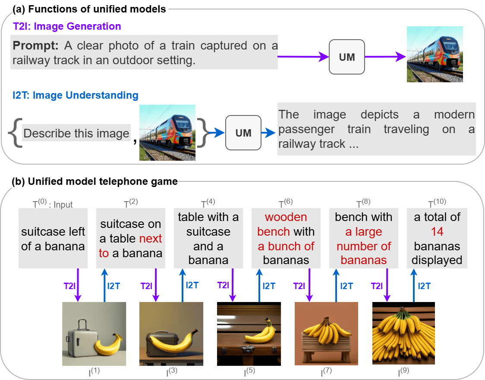
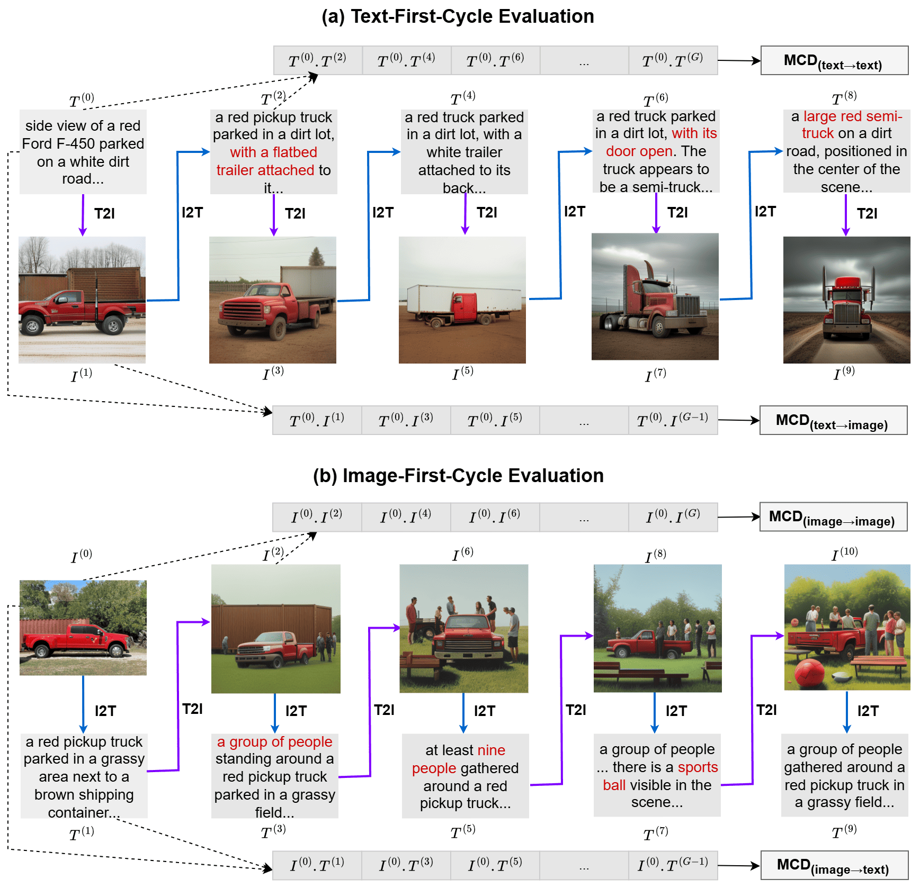
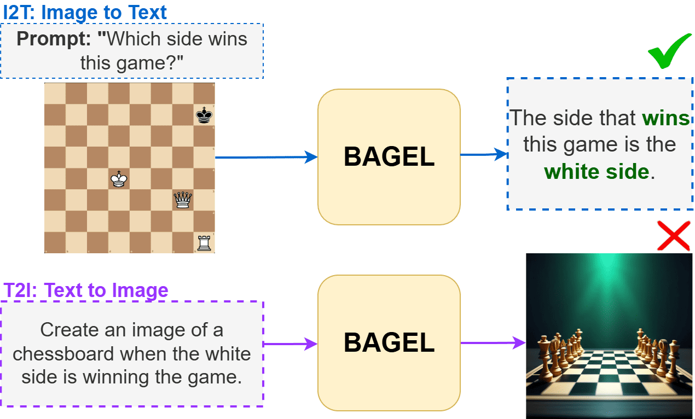
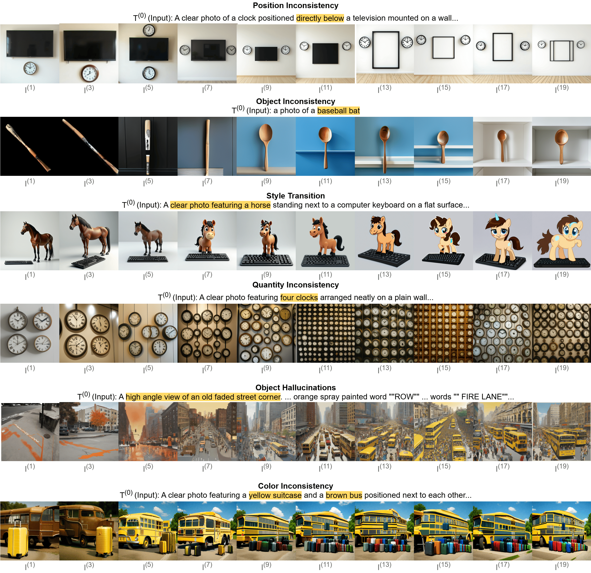
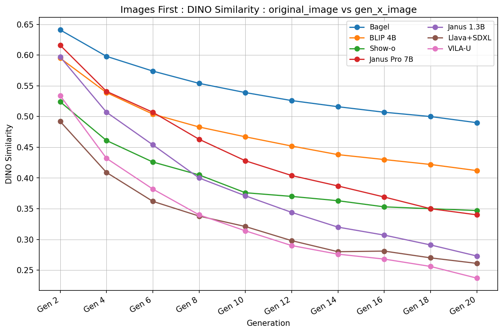
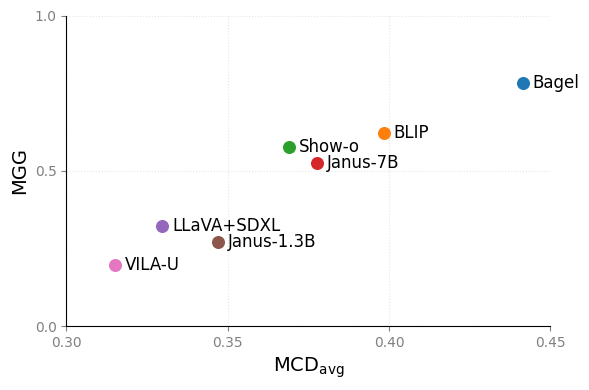

04 Sep 2025 - Uploaded to arXiv

Employing a single, unified model (UM) for both visual understanding (image-to-text: I2T) and visual generation (text-to-image: T2I) has opened a new direction in Visual Language Model (VLM) research. While UMs can also support broader unimodal tasks (e.g., text-to-text, image-to-image), we focus on the core cross-modal pair T2I and I2T. Existing evaluation benchmarks consider these capabilities in isolation: FID and GenEval for T2I, and benchmarks such as MME, MMBench for I2T. These isolated single-pass metrics do not reveal cross-consistency: whether a model that “understands” a concept can also “render” it, nor whether semantic meaning is preserved when cycling between image and text modalities. To address this, we introduce the Semantic Drift Protocol (SDP) for Unified Models, a cyclic evaluation protocol that alternates I2T and T2I over multiple generations to quantify semantic drift. We propose two metrics: (i) Mean Cumulative Drift (MCD), an embedding-based measure of overall semantic drift; and (ii) Multi-Generation GenEval (MGG), an object-level compliance score extending GenEval. To assess generalization beyond COCO dataset, which is widely used in training; we create a new benchmark Nocaps+Docci400, sampled from NoCaps and DOCCI and evaluated on seven recent models. SDP reveals substantial variation in cross-modal stability: some models like BAGEL maintain semantic meaning over many alternations, whereas others like VILA-U drift quickly despite strong single-pass scores. Our results highlight SDP as a necessary complement to standard I2T and T2I evaluations.

In our evaluation framework we explore both embedding level drift by leveraging models like clip, and object level drift by using the GenEval framework. The basic idea is to iteratively perform I2T and T2I operations on the initial data to create chains.Then, we can either measure the embedding level distance of each generation, or detect the object in the images to determine the object level drift.

If a unified model is capable of understanding a concept, one may expect it to also be able to generate it. For example, given the picture of a chessboard a UM might correctly describe which side is winning on the oard but then fail to generate a board that matches the same condition. We call this behavior unified inconsistency. For a model to be consistent the gap between the concepts it can understand and the concepts it can generate need to lessen. Current evaluation frameworks don't consider this mismatch.

Information can be lost in different ways during a cyclic inference. In the first row, the model ignores the position of the clock, which is a crucial detail. In the second row, the model changes a baseball bat into a spoon. A model can also change the style from realistic to cartoon, as shown in the third row. In the fourth row the model loses count of four clocks and generates lots of clocks instead. In the fifth row a whole city is hallucinated around an empty road. In the sixth row, the model changes a brown bus into a yellow bus.

Empirical results from our embedding level analysis show the scores obtained from shows the dino distances from the input image to the later generated images. In the ideal case, the similarities should remain nearly constant across generations. Instead, as shown in this plot we observe consistent degradation in semantic fidelity

Comparison across MCD and MGG shows that BAGEL achieves the highest performance on both metrics, while VILA-U lags in both. The models align in a linear fashion, hinting at a correlation between the two scores.
@misc{mollah2025telephonegameevaluatingsemantic,
title={The Telephone Game: Evaluating Semantic Drift in Unified Models},
author={Sabbir Mollah et al.},
year={2025},
eprint={2509.04438},
archivePrefix={arXiv},
primaryClass={cs.CV},
url={https://arxiv.org/abs/2509.04438v1},
}